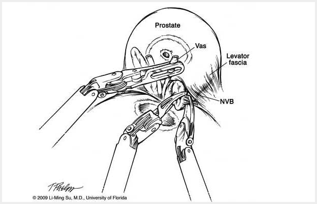

11 · Safety Assessment
GraSP · Robot-assisted radical prostatectomy (RARP)
Safe window for seminal vesicle dissection
The safe surgical window for seminal vesicle dissection[1] is critical for secure management of the seminal vesicle vasculature and lateral pedicles, and for defining the nerve-sparing plane.
This is primarily accomplished in Step 8. Following retraction of the seminal vesicle, a distinct anatomical space is exposed: the lateral prostatic ligaments form the lateral boundaries, the bladder neck lies inferiorly, the prostate and seminal vesicle are situated superiorly, and Denonvilliers' fascia constitutes the posterior boundary. This also marks the commencement of Denonvilliers' fascia dissection, with the inferior aspect gradually transitioning into the rectum.
Three Criteria for Safe Seminal Vesicle Dissection (Analogous to CVS Principles)
Criterion 1 Bilateral ampullae of the vas deferens and the full length of the seminal vesicles are clearly identifiable, with complete removal of the subperitoneal fat and loose areolar connective tissue overlying the seminal vesicle surfaces.
Criterion 2 The anatomical boundaries of the safe visual field are fully delineated:
- Lateral boundary: prostatic lateral ligaments (pedicles)
- Inferior boundary: bladder neck
- Superior structures: prostate and seminal vesicles
- Posterior boundary: Denonvilliers' fascia (rectovesical septum)
Criterion 3 Upon cephalad suspension and traction of the seminal vesicle-vas deferens complex, the anterior layer of Denonvilliers' fascia presents as a uniformly tensioned, smooth, and continuous fascial plane, devoid of focal depressions, adipose tissue prominences, or disorganized fibrous striations; the intended incision path lies entirely within this anterior fascial layer, permitting direct progression to the fascial dissection of Step 9, ensuring correct anatomical plane entry without inadvertent deviation into the prerectal space.
Illustrations

References
[1]Hemal AK, Bhandari A, Tewari A, Menon M. The window sign: an aid in laparoscopic and robotic radical prostatectomy. Int Urol Nephrol. 2005;37(1):73-7.
[2]Kalan S, Coughlin G, Palmer KJ, et al. Robot-assisted laparoscopic radical prostatectomy: an athermal anterior approach to the seminal vesicle dissection[J]. Journal of Robotic Surgery, 2008, 2(4): 223-226.